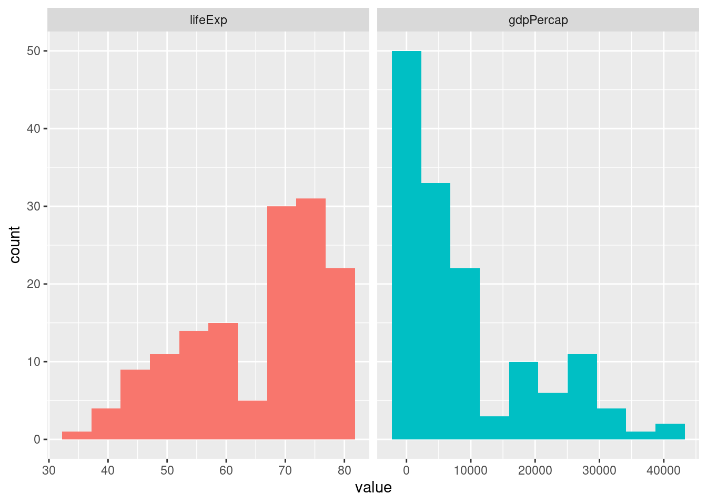
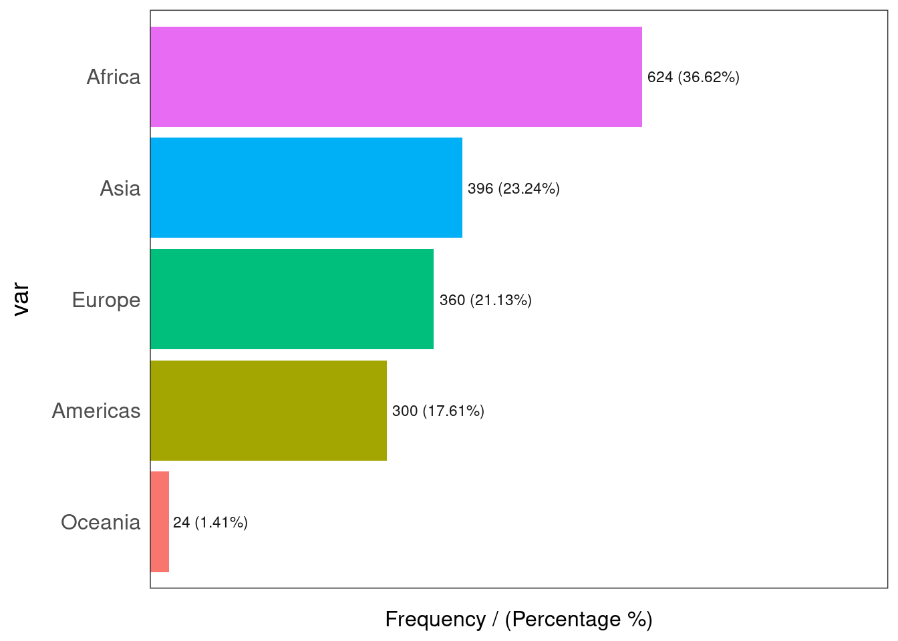

Chapter 6 Summary Statistics For One Variable
6.1 One Quantitative Variable
6.1.1 Using base R summary function
gapminder %>%
filter(year==1997) %>%
select(lifeExp) %>%
summary()## lifeExp
## Min. :36.09
## 1st Qu.:55.63
## Median :69.39
## Mean :65.01
## 3rd Qu.:74.17
## Max. :80.696.1.2 Using dplyr summarise function
It is often helpful to create data summaries during preliminary phases of examination. Here is how to use the dplyr package summarise command in the analysis pipeline system.
gapminder %>%
dplyr::filter(year==1997) %>%
dplyr::summarise(meanLE=mean(lifeExp,na.rm=TRUE),
medLE=median(lifeExp,na.rm=TRUE),
sd=sd(lifeExp,na.rm=TRUE),
iqr=IQR(lifeExp,na.rm=TRUE),
Q1=quantile(lifeExp,probs=0.25,na.rm=TRUE),
Q3=quantile(lifeExp,probs=0.75),
n=n())## # A tibble: 1 × 7
## meanLE medLE sd iqr Q1 Q3 n
## <dbl> <dbl> <dbl> <dbl> <dbl> <dbl> <int>
## 1 65.0 69.4 11.6 18.5 55.6 74.2 1426.1.3 Summary Statistics Using gtsummary package
gapminder %>%
dplyr::filter(year==1997) %>%
dplyr::select(lifeExp,gdpPercap) %>%
gtsummary::tbl_summary(statistic = list(
gtsummary::all_continuous() ~ "{mean} ({sd})",
gtsummary::all_categorical() ~ "{n} / {N} ({p}%)"),
digits = gtsummary::all_continuous() ~ 2,
label = c(gdpPercap ~ "Per Person GDP",
lifeExp ~ "Life Expectancy (years)")
)| Characteristic | N = 1421 |
|---|---|
| Life Expectancy (years) | 65.01 (11.56) |
| Per Person GDP | 9,090.18 (10,171.49) |
| 1 Mean (SD) | |
6.1.4 Summary Statistics Using funModeling package
The profiling_num and plot_num functions from the funModeling package help
give a concise numeric and visual overview of the numeric variables in the
dataframe.
funModeling::profiling_num(gapminder)## variable mean std_dev variation_coef p_01 p_05 p_25 p_50 p_75 p_95
## 1 year 1.979500e+03 1.726533e+01 0.008722066 1952.0000 1952.0000 1965.750 1979.5000 1.993250e+03 2007.000
## 2 lifeExp 5.947444e+01 1.291711e+01 0.217187544 33.4926 38.4924 48.198 60.7125 7.084550e+01 77.437
## 3 pop 2.960121e+07 1.061579e+08 3.586268548 154117.9200 475458.9000 2793664.000 7023595.5000 1.958522e+07 89822054.500
## 4 gdpPercap 7.215327e+03 9.857455e+03 1.366182632 369.2201 547.9964 1202.060 3531.8470 9.325462e+03 26608.333
## p_99 skewness kurtosis iqr range_98 range_80
## 1 2.007000e+03 0.0000000 1.783217 2.750000e+01 [1952, 2007] [1957, 2002]
## 2 8.023892e+01 -0.2524798 1.873099 2.264750e+01 [33.4926, 80.23892] [41.5108, 75.097]
## 3 6.319900e+08 8.3328742 80.716151 1.679156e+07 [154117.92, 631990000.000002] [946367.1, 54801369.5]
## 4 3.678357e+04 3.8468819 30.431702 8.123402e+03 [369.220127794, 36783.5723707] [687.71836128, 19449.138209]funModeling::plot_num(gapminder)
This example shows summary statistics for two quantitative variables. For only one variable, simply use select to obtain the desired variable.
gapminder %>%
filter(year==1997) %>%
select(lifeExp,gdpPercap) %>%
funModeling::profiling_num() ## variable mean std_dev variation_coef p_01 p_05 p_25 p_50 p_75 p_95 p_99
## 1 lifeExp 65.01468 11.55944 0.1777974 40.03681 43.83415 55.63375 69.394 74.16975 78.7635 79.7499
## 2 gdpPercap 9090.17536 10171.49326 1.1189546 434.72721 590.90598 1366.83796 4781.825 12022.86719 29088.8709 38442.0133
## skewness kurtosis iqr range_98 range_80
## 1 -0.6427906 2.218599 18.536 [40.03681, 79.7499] [47.4671, 77.548]
## 2 1.2979366 3.604446 10656.029 [434.727210598, 38442.0133187] [789.29339925, 26905.596049]#
gapminder %>%
filter(year==1997) %>%
select(lifeExp,gdpPercap) %>%
funModeling::plot_num() 
6.1.5 Summary Statistics: skimr package
The skimr package produces summary statistics about variables and overviews for dataframes. It is easy to manipulate and use pipes, select, and filter from the tidyverse family of packages.
The next code supplies a dataframe that contains both categorical variables (continent), and numeric variables (lifeExp, gdpPercap). Numeric variables are chosen with the yank function, then some attributes are omitted from the display (n_missing, complete_rate) using the select function from dplyr.
varlist <- c("n_missing","complete_rate")
gapminder %>%
filter(year==1997) %>%
select(-year, -country, -pop) %>%
skimr::skim_without_charts() %>%
skimr::yank("numeric") %>%
dplyr::select(-one_of(varlist))Variable type: numeric
| skim_variable | mean | sd | p0 | p25 | p50 | p75 | p100 |
|---|---|---|---|---|---|---|---|
| lifeExp | 65.01 | 11.56 | 36.09 | 55.63 | 69.39 | 74.17 | 80.69 |
| gdpPercap | 9090.18 | 10171.49 | 312.19 | 1366.84 | 4781.83 | 12022.87 | 41283.16 |
6.2 One Categorical Variable
6.2.1 Counting Values
The next command counts the number of rows in the dataset for each continent - then we show a variant which pipes the output into the kable function for a more attractive table.
gapminder %>% count(continent)## # A tibble: 5 × 2
## continent n
## <fct> <int>
## 1 Africa 624
## 2 Americas 300
## 3 Asia 396
## 4 Europe 360
## 5 Oceania 24#
gapminder %>% count(continent) %>% knitr::kable()| continent | n |
|---|---|
| Africa | 624 |
| Americas | 300 |
| Asia | 396 |
| Europe | 360 |
| Oceania | 24 |
#
gapminder %>% count(continent, sort=TRUE) %>% knitr::kable()| continent | n |
|---|---|
| Africa | 624 |
| Asia | 396 |
| Europe | 360 |
| Americas | 300 |
| Oceania | 24 |
The previous code tells us how many lines (rows) for each continent, but many rows are repeated for each country - just different years. The next code counts the number of observations in variable n and distinct countries in variable n_countries.
gapminder %>% filter(year==1997 | year==1967) %>%
dplyr::group_by(continent) %>%
dplyr::summarise(n = n(), n_countries = n_distinct(country)) %>% knitr::kable()| continent | n | n_countries |
|---|---|---|
| Africa | 104 | 52 |
| Americas | 50 | 25 |
| Asia | 66 | 33 |
| Europe | 60 | 30 |
| Oceania | 4 | 2 |
6.2.2 Categorical variable: gtsummary package
gapminder %>%
filter(year==1997) %>%
select(continent,year) %>%
gtsummary::tbl_summary(include = c(continent),
statistic = list(
gtsummary::all_categorical() ~ "{n} / {N} ({p}%)")
)| Characteristic | N = 1421 |
|---|---|
| continent | |
| Â Â Â Â Africa | 52 / 142 (37%) |
| Â Â Â Â Americas | 25 / 142 (18%) |
| Â Â Â Â Asia | 33 / 142 (23%) |
| Â Â Â Â Europe | 30 / 142 (21%) |
| Â Â Â Â Oceania | 2 / 142 (1.4%) |
| 1 n / N (%) | |
6.2.3 Categorical variable: skimr package
Here we summarize a categorical(factor) variable (continent), and observe it has 5 unique values (levels) and the most frequent values are displayed.
gapminder %>% filter(year==1997) %>%
select(lifeExp,continent) %>%
skimr::skim_without_charts() %>%
skimr::yank("factor") %>%
dplyr::select(-n_missing,-ordered,-complete_rate)Variable type: factor
| skim_variable | n_unique | top_counts |
|---|---|---|
| continent | 5 | Afr: 52, Asi: 33, Eur: 30, Ame: 25 |
6.2.4 Categorical variable: funModeling package
The funModeling package gives an easy way to learn about categorical variables of types: character and factor. There are two categorical variables in the gapminder dataframe: country and continent. There are a lot of countries, so we demonstrate this command for only the continent variable.
# Frequency distribution of entire dataframe
# will produce lots of output and warnings
#funModeling::freq(gapminder)
# next command for one category variable: continent
funModeling::freq(gapminder$continent)
## var frequency percentage cumulative_perc
## 1 Africa 624 36.62 36.62
## 2 Asia 396 23.24 59.86
## 3 Europe 360 21.13 80.99
## 4 Americas 300 17.61 98.60
## 5 Oceania 24 1.41 100.00There are a lot of observations (rows) for Africa and very few for Oceania (Australia, New Zealand, etc).
6.2.5 Categorical variable: janitor package
Let’s begin with the base R function table:
gapminder %>%
filter(year==1997) %>%
select(continent) %>%
table()## continent
## Africa Americas Asia Europe Oceania
## 52 25 33 30 2Now contrast with the tabyl function from the janitor package:
gapminder %>%
filter(year==1997) %>%
janitor::tabyl(continent,sort=TRUE) %>%
knitr::kable()| continent | n | percent |
|---|---|---|
| Africa | 52 | 0.3661972 |
| Americas | 25 | 0.1760563 |
| Asia | 33 | 0.2323944 |
| Europe | 30 | 0.2112676 |
| Oceania | 2 | 0.0140845 |
#
gapminder %>%
filter(year==1997) %>%
janitor::tabyl(continent,sort=TRUE) %>%
janitor::adorn_pct_formatting(digits=2,affix_sign = TRUE) %>%
knitr::kable()| continent | n | percent |
|---|---|---|
| Africa | 52 | 36.62% |
| Americas | 25 | 17.61% |
| Asia | 33 | 23.24% |
| Europe | 30 | 21.13% |
| Oceania | 2 | 1.41% |